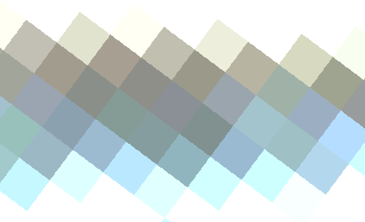
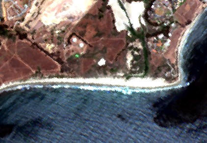
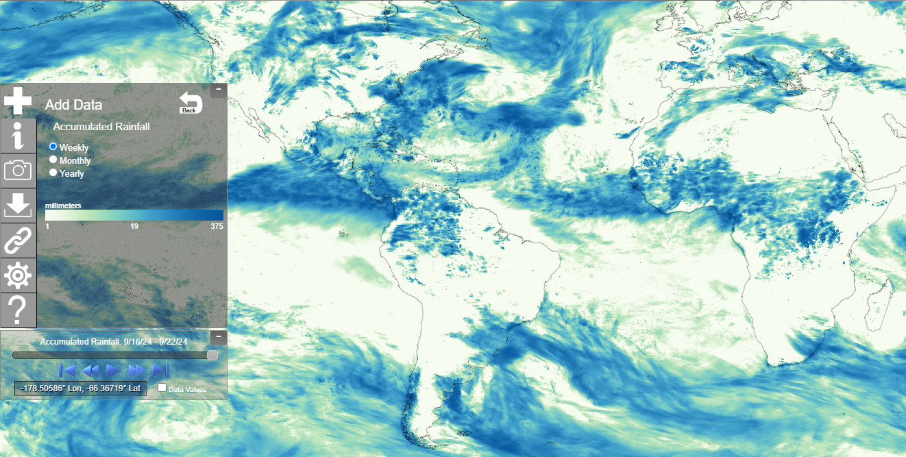

3 Raster
3.1 Exercise
Open an image or photo on your phone or computer. Zoom in really far. What do you see?

Above: A very zoomed in image of a beach in a Sentinel 2 satellite image

Above: A zoomed-out image of the same beach in a Sentinel 2 satellite image
Image files like your phone’s camera produces are composed of a grid (imagine graph paper) where each square contains a color. When you zoom out, our brains interpret the image as objects, but it’s really a bunch of colored squares. Squares next to each other might be similar in color, but contain small differences in shade or value. A square could contain virtually any color. (Technically, there are limits on the number of colors, but we’re not going to get into that today.)
Most digital photographs you find will be formatted as Raster data.
Why? Raster data is best for gradients.
3.2 Description
Geometry Representation: Grid
Attributes Representation: each cell contains one piece of information, represented as either discrete or continuous values
Coverage is continuous across the dataset, unlike vector data.
One piece of information can be stored in each layer or band. This is why it is common to have multiband images. For example, a “color” image is composed on 3 bands - the red, green, and blue components are stored in separate layers and combine by your image viewer software to make it look they way you’d expect.
Bands can also be used to represent different points in time. For example, you might have a raster file containing precipitation values with bands for ten different years.
3.3 Examples
NOAA’s Climate Data Viewer allows users to explore climate datasets online though an interactive web map. This tool loads raster datasets for various climate and weather measurements and stores each time period as a different band.

Above: A screenshot of NOAA’s Cliamte Data Mapper interactive online tool showing accumulated rainfall totals for 2024-09-16 through 2024-09-22. Darker blues are higher amounts of precipitation.
The raster data model represents precipitation (or temperature, or elevation, etc.) well because the values we want to store are continuous and the coverage is also continuous. Where I’m standing might have an inch of rain, but 100 feet away maybe recieved 1.1 inches, for example. And we are probably interested in the rainfall measurements everywhere, not just in discrete locations if we’re tracking weather data.
3.4 File Formats
Here are some common file formats you’ll encounter when working with raster data:
| Name | File Extension | Notes |
|---|---|---|
| Geo TIFF | .tiff or .tif | |
| geopackage | .gpkg | Yes, it stores both raster and vector data |
| netCDF | .nc | Common in weather & climate data |
| Hierarchical Data Format (HDF) | .hdf5 | Common in weather & climate data |